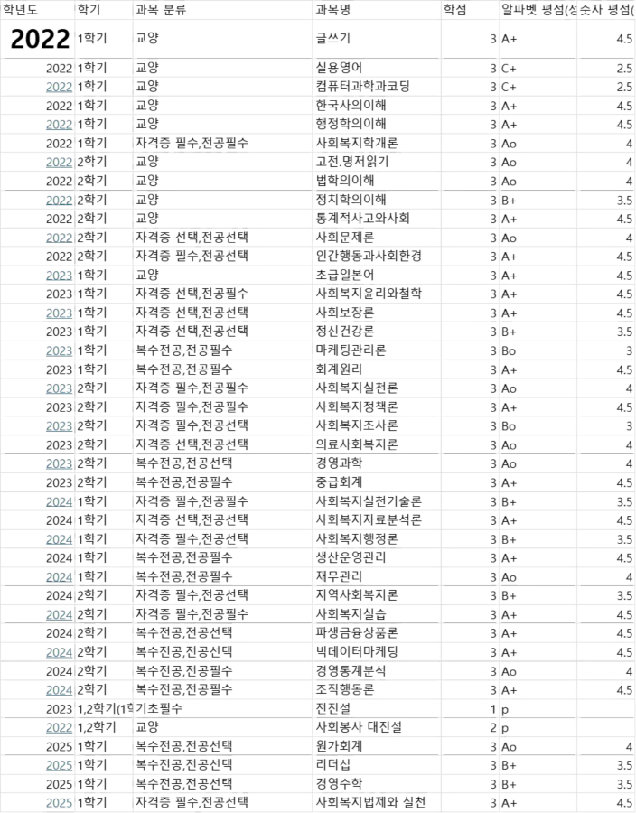
시장이 효빈광역시 인프라를 확충하며 좋아하는 고기와 빵을 뜯어 먹을 때마다 '역시 부가가치세가 자본주의의 꽃이야!'라고 외쳤다는 전설이 있다. 특히 효빈대학교 학부생 시절, 부가가치세 과세표준 계산 문제를 단 3초 만에 암산으로 풀어내고 교수님을 경악시켰다는 일화가 후배들 사이에서 구전되고 있다.미래의 건물주가 되기 위한, 혹은 공기업 프리패스를 뚫기 위한 가장 완벽하고 위대한 챕터, 부가가치세를 완벽히 정복해보자."
1. 부가가치세의 의의
1.1. 부가가치세의 기본개념
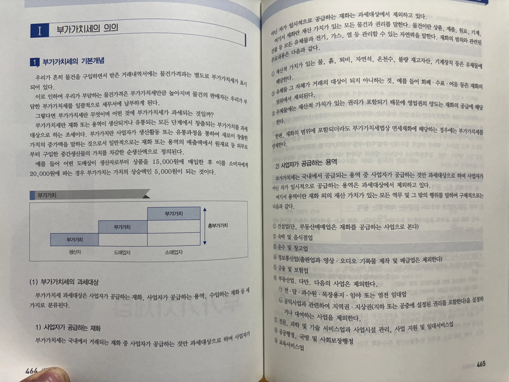
- 정의: 재화 또는 용역이 생산되거나 유통되는 모든 단계에서 창출되는 부가가치를 과세대상으로 하는 조세. 우리가 흔히 물건을 구입하면서 받은 거래내역서에는 물건가격과는 별도로 부가가치세가 표시되어 있으며, 물건의 판매자는 우리가 부담한 부가가치세를 일괄적으로 세무서에 납부하게 된다.
- 부가가치: 사업자가 생산활동 또는 유통과정을 통해 새로이 창출한 가치의 증가액. 일반적인 정의로는 재화 또는 용역의 매출액에서 원재료 등 외부로부터 구입한 중간생산물의 가치를 차감한 순 생산액을 의미한다.

3호선 야마부키 사아야가 빵집(도매상/소매상 역할)을 운영한다고 치자. 사아야가 밀가루 공장(생산자)으로부터 밀가루와 재료를 15,000원에 매입한 후, 이를 열심히 반죽하고 오븐에 구워 최종소비자인 박효빈 시장(96년생)에게 20,000원에 팔았다.
이때 사아야가 자신의 노동력과 오븐 기술로 새로 만들어낸 가치, 즉 부가가치는 가치의 상승액인 5,000원(20,000원 - 15,000원)이 된다. 국가는 바로 이 '새로 창출된 5,000원'에 대해 부가가치세 10%를 세금으로 징수하는 것이다! 시장님은 2만 원어치 빵을 먹으면서도 시의 세수를 확보하는 창조경제를 실현 중이시다.
1.2. 부가가치세의 과세대상
부가가치세 과세대상은 사업자가 공급하는 재화, 사업자가 공급하는 용역, 수입하는 재화 등 세 가지로 분류된다.
1) 사업자가 공급하는 재화
부가가치세는 국내에서 거래되는 재화 중 사업자가 공급하는 것만 과세대상으로 하며, 사업자가 아닌 자가 일시적으로 공급하는 재화는 과세대상에서 제외한다.
- 재화의 정의: 재산 가치가 있는 모든 물건과 권리.
- 물건: 상품, 제품, 원료, 기계, 건물 등 모든 유체물과 전기, 가스, 열 등 관리할 수 있는 자연력.
- 재산적 가치가 있는 물, 흙, 퇴비, 자연석, 온천수, 불량 재고자산, 기계장치 등은 유체물에 해당한다.
- 유체물 그 자체가 거래의 대상이 되지 아니하는 것 (예: 화폐, 수표, 어음 등): 재화의 범위에서 제외된다.
이걸 세금 매기면 화폐 경제가 붕괴한다. - 무체물: 재산적 가치가 있는 권리가 포함되므로 영업권의 양도는 재화의 공급에 해당한다.
* 한편, 재화의 범위에 포함되더라도 부가가치세법상 '면세재화'에 해당할 경우 부가가치세를 면제한다.

1호선 기관사 고나미가 효빈공단에서 폐전동차 부품(유체물)을 사업 목적으로 매각했다면 명백한 과세대상이다. 하지만 뱅드림의 하나조노 타에가 개인적으로 쓰던 토끼 인형을 당근마켓에 일시적으로 내다 팔았다면? 사업자가 아니므로 과세대상에서 깔끔하게 제외된다!
'관리할 수 있는 자연력' 팩폭: 공대 너드 임세하가 7호선 무가선 트램의 대용량 배터리에서 남은 전기를 몰래 빼돌려 한전에 팔려고 했다고 치자. '전기'는 눈에 보이지 않는 무체물이지만 '관리할 수 있는 자연력'이므로 명백한 재화의 공급이다. 물론 전기를 빼돌리다 언니 임세정에게 걸려서 몽키스패너로 두들겨 맞았다.
'화폐' 일화: 2호선 아오바 모카가 빵값이 부족하다며 하루빈에게 "내가 가진 만 원짜리 지폐, 부가세 10% 포함해서 11,000원에 팔게~"라고 헛소리를 시전했다. 화폐는 그 자체가 거래 대상이 아니므로 재화가 아니다. 모카는 그대로 등짝을 맞았다.
2) 사업자가 공급하는 용역
부가가치세는 국내에서 공급되는 용역 중 사업자가 공급하는 것만 과세대상으로 하며, 역시 사업자가 아닌 자가 일시적으로 공급하는 용역은 과세대상에서 제외된다.
- 용역의 정의: 재화 외의 재산 가치가 있는 모든 역무 및 그 밖의 행위.
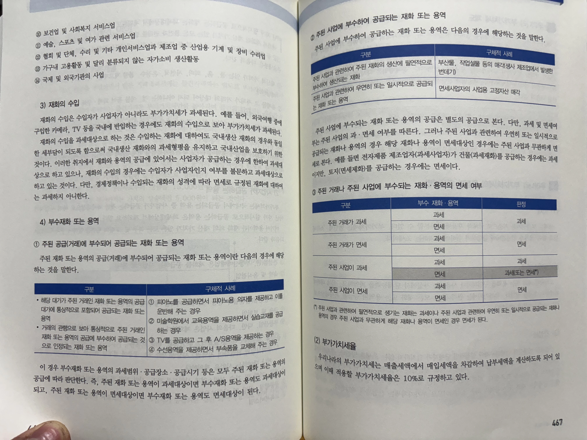
| 용역의 종류 (14개 업종 완벽 분석) | |
|---|---|
|
1. 건설업 (단, 부동산매매업은 재화를 공급하는 사업으로 간주) 2. 숙박 및 음식점업 3. 운수 및 창고업 4. 정보통신업 (출판업과 영상·오디오 기록물 제작 및 배급업은 제외) 5. 금융 및 보험업 6. 부동산업 (아래 제외 항목 주의) 7. 전문 과학 및 기술 서비스업과 사업시설 관리, 사업 지원 및 임대서비스업 |
8. 공공행정, 국방 및 사회보장행정 9. 교육서비스업 10. 보건업 및 사회복지 서비스업 11. 예술, 스포츠 및 여가 관련 서비스업 12. 협회 및 단체, 수리 및 기타 개인서비스업과 제조업 중 산업용 기계 및 장비 수리업 13. 가구내 고용활동 및 달리 분류되지 않는 자가소비 생산활동 14. 국제 및 외국기관의 사업 |
부동산업은 원칙적으로 용역의 공급이지만, 다음의 사업은 용역의 공급에서 제외된다. 시험 단골 출제 포인트니 반드시 암기할 것.
- 전·답·과수원·목장용지·임야 또는 염전 임대업
- 공익사업과 관련하여 지역권·지상권(지하 또는 공중에 설정된 권리를 포함한다)을 설정하거나 대여하는 사업

4호선 역무원 다로나가 근무 중 역내 편의시설을 안내하는 것은 근로의 제공이므로 부가세 과세대상이 아니다. 반면 토야마 카스미가 장원역 앞 상가를 임대해(상가 임대는 과세!) 라이브 하우스(예술, 스포츠 및 여가 관련 서비스업)를 차려 관객들에게 돈을 받고 공연을 보여준다면 이는 완벽한 용역의 공급(과세대상)이다.
실제로 카스미가 장원역 앞에 라이브 하우스를 무허가로 차리려다가 다로나에게 적발되어 탈세 혐의로 효빈세무서에 끌려갈 뻔한 흑역사가 있다.
농지 임대업 꿀팁 일화:
만약 3호선 박라미가 퇴직 후 귀농하겠다며 동곡역 근처의 '과수원'을 누군가에게 임대해주고 임대료를 받는다면? 과수원 임대업은 부동산업(과세)에서 아예 제외되므로 면세 혜택을 받는다! 식량 안보와 농업 보호를 위한 세법의 특별 조치다.3) 재화의 수입
재화의 수입은 수입자가 사업자가 아니라도 부가가치세가 과세된다. (예: 외국여행 중에 구입한 카메라, TV 등을 국내에 반입하는 경우에도 재화의 수입으로 보아 과세)
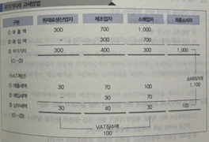
재화의 수입을 과세대상으로 하는 이유는 수입하는 재화에 대해서도 국내생산 재화의 경우와 동일한 세부담이 되도록 함으로써 국내생산 재화와의 과세형평을 유지하고 국내산업을 보호하기 위함이다. 이러한 취지에서 재화와 용역의 공급에 있어서는 사업자가 공급하는 경우에 한하여 과세대상으로 하고 있으나, 재화의 수입의 경우에는 수입자가 사업자인지 여부를 불문하고 과세대상으로 하고 있는 것이다.
* 단, 경제정책이나 수입되는 재화의 성격에 따라 면세로 규정된 재화에 대해서는 과세하지 아니한다.

4) 부수재화 또는 용역
① 주된 공급(거래)에 부수되어 공급되는 재화 또는 용역
주된 재화 또는 용역의 공급(거래)에 부수되어 공급되는 재화 또는 용역이란 다음의 경우를 말한다.
| 구분 | 구체적 사례 (캐릭터 치환 버전) |
|---|---|
|
|
핵심 결론
이 경우 부수재화 또는 용역의 과세범위·공급장소·공급시기 등은 모두 주된 재화 또는 용역의 공급에 따라 판단한다. 즉, 주된 재화/용역이 과세면 부수재화/용역도 과세, 면세면 부수재화/용역도 면세가 된다.
캐릭터 일화: 1호선 하나조노 타에가 악기점에서 과세 재화인 '일렉 기타'를 샀더니 사장님이 서비스로 '기타 스트랩(부수재화)'과 '토끼 스티커'를 끼워줬다. 이때 세무서에서 "스티커는 따로 면세하시죠?"라고 묻지 않는다. 이 스트랩과 스티커는 주된 거래(기타, 과세)에 통상적으로 부수되므로 별도로 따지지 않고 통째로 과세 거래로 본다.
② 주된 사업에 부수하여 공급되는 재화 또는 용역
| 구분 | 구체적 사례 (캐릭터 치환 버전) |
|---|---|
| 주된 사업과 관련하여 주된 재화의 생산에 필연적으로 부수하여 생산되는 재화 | 2호선 아오바 모카가 빵(주된 재화)을 만들다 남은 빵 테두리와 부스러기(부산물/폐물)를 가축 사료용으로 양계장에 매각하는 경우 (원문: 생사 제조업에서 발생한 번데기 매각) |
| 주된 사업과 관련하여 우연히 또는 일시적으로 공급되는 재화 또는 용역 | 면세사업자인 3호선 박라미가 도서관/학원에서 쓰던 사업용 빔프로젝터(고정자산)를 당근마켓에 중고로 매각하는 경우 |
주된 사업에 부수되는 재화 또는 용역의 공급은 별도의 공급으로 간주한다. 과세 및 면세 여부는 주된 사업의 과·면세 여부를 따른다.
그러나 주된 사업과 관련하여 우연히/일시적으로 공급되는 재화나 용역이 원래 면세대상인 경우에는 주된 사업과 무관하게 면세로 본다.
(예: 전자제품 제조업자(과세사업자)가 건물(과세재화)을 공급하면 과세이지만, 토지(면세재화)를 공급하면 면세이다.)
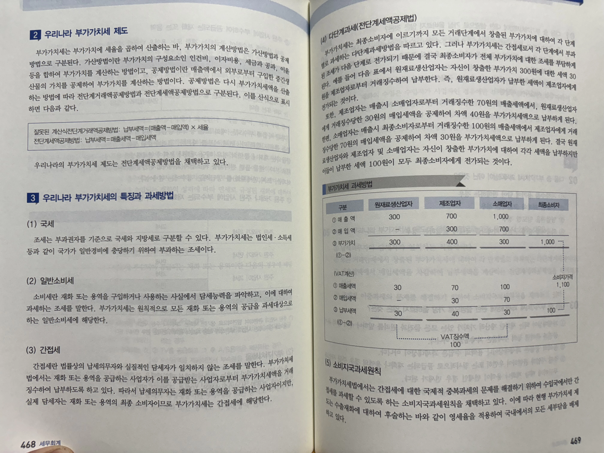
이 표를 외우지 못하면 시험장에서 피눈물을 흘리게 될 것이다. (*) 표시된 예외 항목이 킬러 포인트!
| 구분 | 부수 재화·용역 | 판정 |
|---|---|---|
| 주된 거래가 과세 | 과세 | 과세 |
| 면세 | ||
| 주된 거래가 면세 | 과세 | 면세 |
| 면세 | ||
| 주된 사업이 과세 | 과세 | 과세 |
| 면세 | 과세 (또는 면세*) | |
| 주된 사업이 면세 | 과세 | 면세 |
| 면세 |
(*) 주된 사업과 관련하여 필연적으로 생기는 재화는 과세이나, 주된 사업과 관련하여 우연히 또는 일시적으로 공급되는 재화나 용역의 경우 주된 사업과 무관하게 해당 재화나 용역이 원래 면세인 경우 면세가 된다.
2. 우리나라 부가가치세 제도
부가가치세는 부가가치에 세율을 곱하여 산출하는 바, 부가가치의 계산방법은 가산방법과 공제방법으로 구분된다.
- 가산방법: 부가가치의 구성요소인 인건비, 이자비용, 세금과 공과, 이윤 등을 합하여 부가가치를 계산하는 방법
- 공제방법: 매출액에서 외부로부터 구입한 중간생산물의 가치를 공제하여 부가가치를 계산하는 방법. 이는 다시 산출 방법에 따라 전단계거래액공제방법과 전단계세액공제방법으로 구분된다.
| 잘못된 계산식 (오답 함정) | 전단계거래액공제방법: 납부세액 = (매출액 - 매입액) × 세율 |
|---|---|
| 현재 채택된 방식 (정답) | 전단계세액공제방법: 납부세액 = 매출세액 - 매입세액 |
결론: 우리나라의 부가가치세 제도는 전단계세액공제방법을 채택하고 있다!
★ (4) 다단계과세(전단계세액공제법) 상세 원리
부가가치세는 최종소비자에 이르기까지 모든 거래단계에서 창출된 부가가치에 대하여 각 단계별로 과세하는 다단계과세방법을 따르고 있다. 그러나 부가가치세는 간접세로서 각 단계에서 부과된 조세가 다음 단계로 전가되기 때문에 결국 최종소비자가 전체 부가가치에 대한 조세를 부담하게 된다.
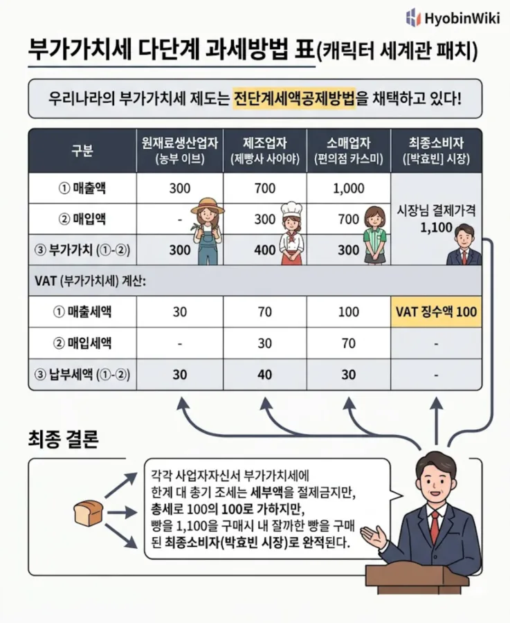
| 구분 | 원재료생산업자 (농부 이브) |
제조업자 (제빵사 사아야) |
소매업자 (편의점 카스미) |
최종소비자 (박효빈 시장) |
|---|---|---|---|---|
| ① 매출액 | 300 | 700 | 1,000 | 시장님 결제가격 1,100 |
| ② 매입액 | - | 300 | 700 | |
| ③ 부가가치 (①-②) | 300 | 400 | 300 | |
| VAT (부가가치세) 계산 | ||||
| ① 매출세액 | 30 | 70 | 100 | VAT 징수액 100 |
| ② 매입세액 | - | 30 | 70 | |
| ③ 납부세액 (①-②) | 30 | 40 | 30 | |
- 예를 들어 위 표에서 농부 이브(원재료생산업자)는 자신이 창출한 부가가치 300원에 대한 세액 30원을 사아야(제조업자)로부터 거래징수하여 국세청에 납부한다.
- 제빵사 사아야(제조업자)는 매출시 카스미(소매업자)로부터 거래징수한 70원의 매출세액에서, 이브에게 거래징수당한 30원의 매입세액을 공제하여 차액 40원을 부가가치세액으로 납부하게 된다.
- 편의점 알바 카스미(소매업자)는 매출시 박효빈 시장(최종소비자)으로부터 거래징수한 100원의 매출세액에서 사아야에게 거래징수당한 70원의 매입세액을 공제하여 차액 30원을 납부하게 된다.
- 최종 결론: 이브, 사아야, 카스미는 자신이 창출한 부가가치에 대하여 각각 세액(30+40+30=100)을 납부하지만 이들이 납부한 세액 100원이 빵을 1,100원에 사 먹은 박효빈 시장(최종소비자)에게 모두 전가되는 것이다.

★ (5) 소비지국과세원칙
부가가치세법에서는 간접세에 대한 국제적 중복과세의 문제를 해결하기 위하여 수입국에서만 간접세를 과세할 수 있도록 하는 소비지국과세원칙을 채택하고 있다. 이에 따라 현행 부가가치세 제도는 수출재화에 대하여 영세율을 적용하여 국내에서의 모든 세부담을 배제하고 있다.
3. 우리나라 부가가치세의 특징과 과세방법
시험에서 오답 보기로 장난치기 가장 좋은 표본이다. (≠) 옆에 있는 오답 키워드들을 주의 깊게 살필 것.
| 구분 | 내용 및 설명 |
|---|---|
| 국세 | 국가가 과세권을 가지고 부과하는 세금임 (≠ 지방세) [비교] 지방세: 시·군·구 등 지방자치단체가 과세권을 가지고 부과하는 세금 |
| 일반소비세 | 부가가치세법상 면세로 열거되지 않은 모든 재화와 용역의 소비에 포괄적 과세하므로 일반세이며, 소비행태에 따라 과세하는 소비세에 해당함 (≠ 개별소비세) [비교] 개별소비세: 보석, 귀금속 등 사치품 등에 추가 과세 예시: 빵을 사 먹든 기계를 사든 부가세 10%가 무조건 붙는다(일반소비세). 하지만 다이아몬드 반지를 사면 부가세 10%에 추가로 '개별소비세'가 또 붙어서 영수증이 폭발한다.
|
| 소비형 부가가치세 | 소비 행위에 해당하는 부가가치만을 과세 대상으로 하는 소비형 부가가치세를 채택함 |
| 전단계 세액공제법 | 부가가치세는 매출세액에서 전단계 지급한 매입세액을 공제하는 전단계 세액공제를 채택함 (≠ 전단계 거래액공제법) ※ 증빙서류인 '세금계산서' 수취가 필수적이며, 사업자 간의 상호대사(Cross-check)를 통해 탈세를 완벽하게 차단하는 기능이 있다. |
| 간접세 | 납부는 각 단계의 사업자이지만 실질적 세부담은 최종 소비자가 지게 됨 (≠ 직접세) [비교] 직접세: 소득세, 법인세 등 (내가 번 돈에 대해 내가 직접 납부) |
| 다단계 거래세 | 각 거래단계마다 증가하는 부가가치에 대해 사업자가 부가가치세를 징수하도록 하는 다단계 거래세에 해당함 (≠ 단단계 거래세) |
| 소비지국 과세원칙 | 수출의 경우 영세율을 적용하고 완전면세하며, 수입재화에 대해서는 과세하므로 결국 국내소비에 대해서만 과세하는 소비지국 과세원칙을 채택함 (≠ 생산지국 과세원칙) |
| 물세 | 납세의무자나 부양가족의 교육비, 의료비 등 인적사항을 전혀 고려하지 않음 (≠ 인세) |
| 중립세 | 모든 업종·기업에 대해 공평히 부과함 - 업종이나 업종특성을 전혀 고려하지 않음 (≠ 차등과세) |
| 종가세 | 일정한 금액으로 계산되는 과세표준에 세율을 곱해 세금을 부과함 |
| 보조금 성격 | 면세·영세율 등의 제도를 통해 특정 업종 또는 재화를 간접적 지원함 (정부보조제도) |
| 신고납세제도 | 원칙적 납세의무자의 과세표준신고에 의해 납세의무 확정 (≠ 정부부과제도) |
| 비례세 | 10% 단일세율을 채택하고 있으나 수출 등 일부 특수사업에는 영(0)의 세율을 적용함 |

4. 부가가치세의 계산구조
박효빈 시장이 이 표를 머릿속에 사진 찍듯 스캔해두라고 누누이 강조한 계산구조다. 순서가 생명이다.
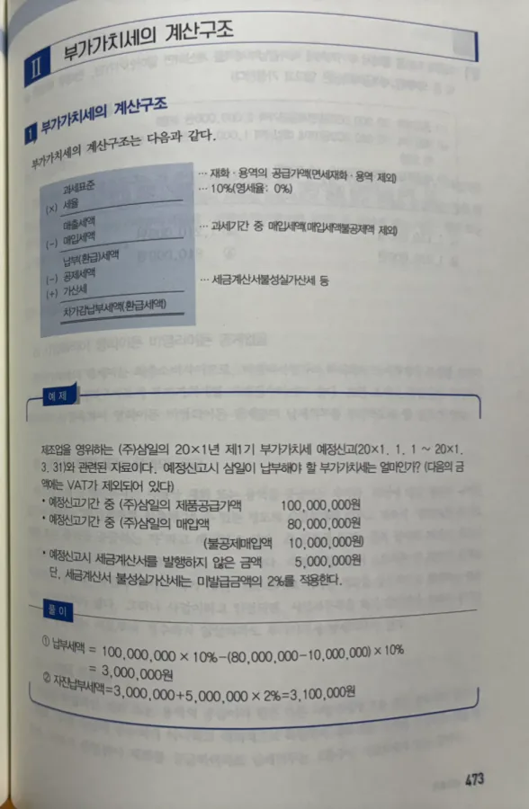
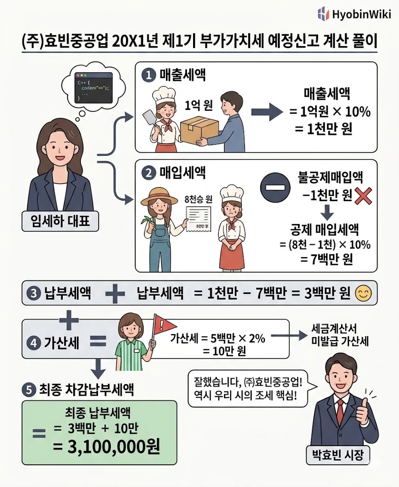
제조업을 영위하는 (주)효빈중공업 (대표: 임세하)의 20X1년 제1기 부가가치세 예정신고(20X1. 1. 1 ~ 20X1. 3. 31)와 관련된 자료이다. 예정신고시 세하가 납부해야 할 부가가치세는 얼마인가? (다음의 금액에는 VAT가 제외되어 있다)
- 예정신고기간 중 효빈중공업의 전동차 모터 공급가액: 100,000,000원
- 예정신고기간 중 효빈중공업의 부품 매입액: 80,000,000원 (이 중 불공제매입액 10,000,000원)
- 예정신고시 세금계산서를 발행하지 않은 금액: 5,000,000원
- * 단, 세금계산서 불성실가산세는 미발급금액의 2%를 적용한다.
■ 세하의 C++ 알고리즘 풀이 과정
① 납부세액 = 매출세액 - 공제받을 수 있는 매입세액
= (100,000,000 × 10%) - { (80,000,000 - 10,000,000) × 10% }
= 10,000,000 - 7,000,000 = 3,000,000원
② 자진납부세액 = 납부세액 + 가산세
= 3,000,000 + (5,000,000 × 2%)
= 3,000,000 + 100,000 = 3,100,000원
5. 납세의무자
5.1. 사업자의 개념과 요건
- 사업자의 개념: 부가가치세의 납세의무자는 각 거래단계별로 재화 또는 용역을 공급하는 사업자이다. 사업자란 사업목적이 영리이든 비영리이든 관계없이 사업상 독립적으로 재화 또는 용역을 공급하는 자를 말하며, 개인과 법인(국가·지방자치단체·지방자치단체조합 포함) 및 법인격 없는 사단·재단 또는 그 밖의 단체를 포함한다.
■ 사업자의 요건 3가지 (필수 암기)
| 요건 | 상세 설명 및 예시 |
|---|---|
| 영리 목적 유무 불구 (비영리도 과세) |
부가가치세의 담세자는 최종소비자이므로, 비영리사업자라 하더라도 소비자에게 조세를 전가하기 위해 납세의무자로서 거래징수해야 한다. 조세 중립성 유지를 위해 영리 유무를 불문한다. 예) 국가기관이 운영하는 KTX 등 공기업을 운영하더라도 독립된 기업의 과세형평을 위해 과세됨. |
| 사업상 재화 또는 용역의 공급 |
부가가치를 창출해 낼 수 있는 형태를 갖추고 계속적·반복적인 의사로 공급해야 한다. 장기간이 소요되는 단 한번의 용역 제공도 과세되지만, 개인이 채권·채무 관계로 취득한 재화를 일시적으로 판매하는 경우는 과세하지 않는다. 예) 청산 중에 있는 내국법인은 계속등기 여부에 불문하고 사실상 사업을 계속할 시 납세 의무가 있다. 사업자등록 유무나 거래징수 유무와도 무관하게 부가가치세 납세의무가 있다. |
| 사업의 독립성 |
사업상 독립적이라 함은 다른 사업자에게 고용 또는 종속되어 있지 아니하며, 주된 사업에 부수되지 아니하고 대외적으로 독립하여 공급함을 말한다. 예) 종업원(근로자)이 회사에 종속되어 근로(용역)를 제공하는 것은 독립성이 없으므로 납세의무가 없다 (납세의무는 고용주인 사업자에게 있음). |

1996년생 박효빈 시장이 약산시청 부지에서 유료 공영주차장 수익사업을 벌인다고 가정하자. 지자체니까 비영리단체라서 부가세를 안 낼까? 천만의 말씀! 부가가치세는 영리목적을 불문하므로 국가나 지방자치단체도 예외 없이 납세의무자가 된다. 시장님도 얄짤없이 주차비에서 부가세 10%를 떼어 국세청에 납부해야 한다. 자본주의의 꽃 앞에선 시장의 권력도 무용지물이다.
5.2. 사업자의 분류 및 거래증빙
사업자를 납세의무의 유형에 따라 구분하면 다음과 같다. 소비자의 역진성을 완화하기 위해 면세제도와 간이과세제도를 운영한다.
| 구분 | 분류 기준 및 내용 | 거래증빙 발급 기준 |
|---|---|---|
| 일반과세자 | 직전 1년간의 공급대가가 1억 4천만원 이상인 자. 매출세액에서 매입세액을 차감하여 납부세액을 계산. |
원칙: 세금계산서 발급 예외: 영수증 발급 대상 사업(최종소비자 대상: 소매, 음식, 숙박 등)을 하는 사업자는 영수증 발급 |
| 간이과세자 | 직전 1년간 공급대가가 1억 4천만원 미만인 자 (개인사업자만 가능). 공급대가에 업종별 부가가치율과 세율을 곱하여 계산. |
[유형1] 직전연도 공급대가 4,800만원 미만인 자 원칙: 영수증 발급 (예외 없음) [유형2] 4,800만 ~ 8,000만원 미만인 자 원칙: 세금계산서 발급 예외: 영수증 발급 대상 사업자는 영수증 발급 |
| 면세사업자 | 부가가치세가 면제되는 재화/용역을 공급하는 사업자. 부가가치세법상 사업자가 아니므로 신고·납부의무가 없음. (당연히 매입세액 공제도 못 받음) |
계산서 또는 영수증 발급 (세금계산서 발급 절대 불가) |
| 겸영사업자 | 과세사업과 면세사업을 겸영하는 자. 부가가치세 납세의무가 존재하므로 과세사업자로 분류하여 사업자등록을 해야 함. | |
※ 참고: 공급대가 = 공급가액 + 부가가치세액
거래증빙 발급 대참사 일화:
2호선 아오바 모카가 일반과세자(빵집 사장님)인데, 거래처에서 빵 대량 주문을 받고 세금계산서 대신 영수증을 끊어주려다 하루빈에게 등짝을 맞았다. 일반과세자는 예외(소매업 등 최종소비자 대상)를 제외하면 무조건 세금계산서를 발급해야 거래처도 매입세액 공제를 받을 수 있다!5.3. 재화의 수입 및 신탁재산 관련 납세의무자
1) 재화의 수입
- 소비지국 과세원칙에 따라 수입 통관 시 세관장은 모든 재화(면세 제외)에 10% 세율을 과세한다.
- 재화를 수입하는 자는 사업자 여부와 관계없이 (수입목적, 사용용도 불문) 부가가치세 납세의무가 있다.
2) 신탁재산과 관련된 재화/용역 공급
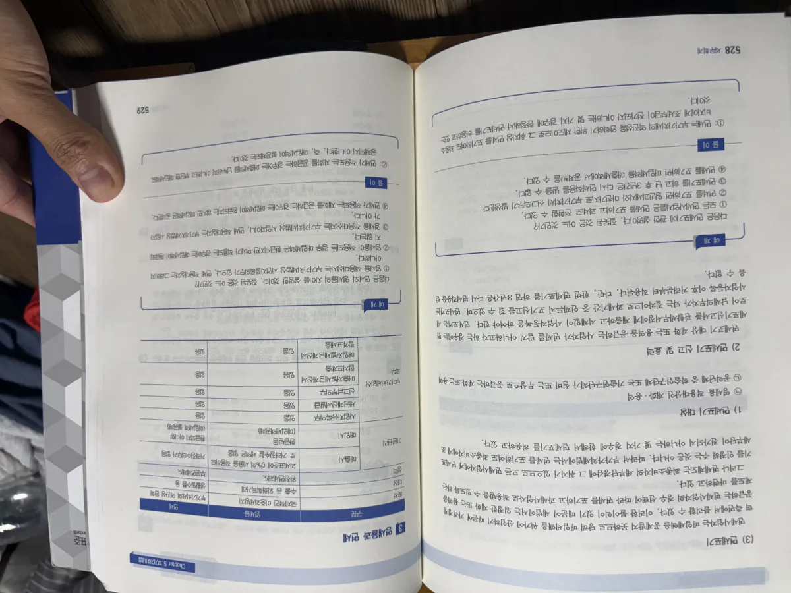
| 2021. 12. 31. 이전에 설정한 신탁 | 2022. 1. 1. 이후에 설정한 신탁 |
|---|---|
|
(1) 원칙: 위탁자 (2) 예외 (수탁자가 납세의무자): ① 채무이행을 위해 담보신탁*의 신탁재산을 처분하는 경우 ② 수탁자가 지정개발자로서 재개발·재건축·가로주택정비·소규모재건축을 시행하는 과정에서 신탁재산을 처분하는 경우 |
(1) 원칙: 수탁자 (2) 예외 (위탁자가 납세의무자): ① 신탁재산과 관련된 재화를 위탁자 명의로 공급하는 경우 ② 위탁자가 신탁재산을 실질적으로 지배·통제하는 경우 (부동산개발사업비 조달의무 미부담, 위탁자 지시로 특수관계인에 공급 등) ③ 대통령령으로 정하는 경우 ④ 2022.1.1. 이후 위탁자의 지위이전을 신탁재산의 공급으로 보는 경우 (기존 위탁자) |
* 담보신탁: 수탁자가 위탁자로부터 일정한 재산을 위탁자의 채무이행을 담보하기 위해 수탁으로 운용하는 신탁계약.
5.4. 사업자등록 및 정정/말소
신규로 사업을 개시하는 자(또는 개시하고자 하는 자)는 사업장마다 관할세무서장에게 사업자등록을 해야 한다. (사업장 소재지 무관 전국 모든 세무서/온라인 신청 가능). 이는 납세의무자의 인적사항 및 과세자료 확보를 위한 조세협력의무이다.
- 등록신청: 사업 개시일로부터 20일 이내. (단, 신규 사업자는 사업 개시일 전이라도 등록 가능 - 매입세액 공제를 위함).
- 등록증 발급: 신청일로부터 2일 이내 (토, 공휴일, 근로자의 날 제외). 사업장 현황 파악 필요시 5일 이내로 연장 가능.
- 휴·폐업신고 및 말소: 휴/폐업 시 지체 없이 신고서 제출. 세무서장은 사실상 사업 미개시/폐업 시 등록을 말소하고 등록증을 회수(또는 공시)해야 한다.
- 면세사업자: 부가세법상 의무는 배제되나 법인세/소득세법상 등록은 해야 함. 과세사업 전환/겸영 시 새로 등록해야 함(정정신고도 등록신청으로 간주).

시험에 지겹도록 나오는 단골 문제. 당일 재발급 사유와 2일 이내 재발급 사유를 완벽히 구분하라.
| 신청일 당일 발급 | 신청일부터 2일 이내 발급 |
|---|---|
* 암기팁: 상호나 도메인(이름)만 바꾸는 건 전산상 타이핑만 치면 끝나므로 당일 즉시 해줌!
|
|
주소지 자동 정정: 사업장과 주소지가 동일한 사업자가 이전 시, 전입신고 시 사업장 이전에도 동의하면 정정신고서를 제출한 것으로 본다.
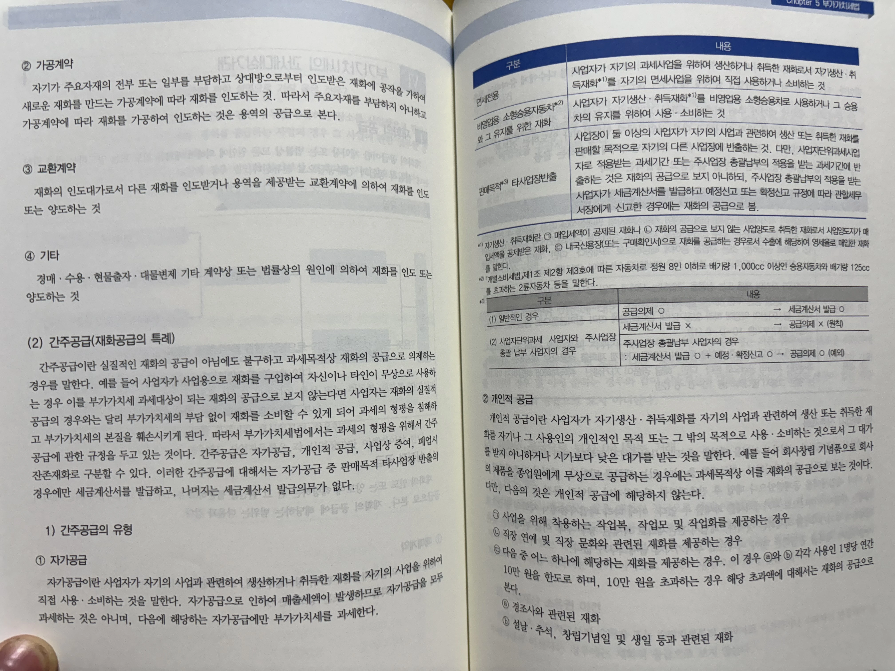
6. 과세기간 및 신고·납부기한
부가가치세는 1년을 2개의 과세기간으로 나누어 매 6개월마다 확정신고·납부하도록 하되, 간이과세자는 납세편의 제고를 위해 1년을 과세기간으로 한다.
1) 일반적인 과세기간과 신고납부기한
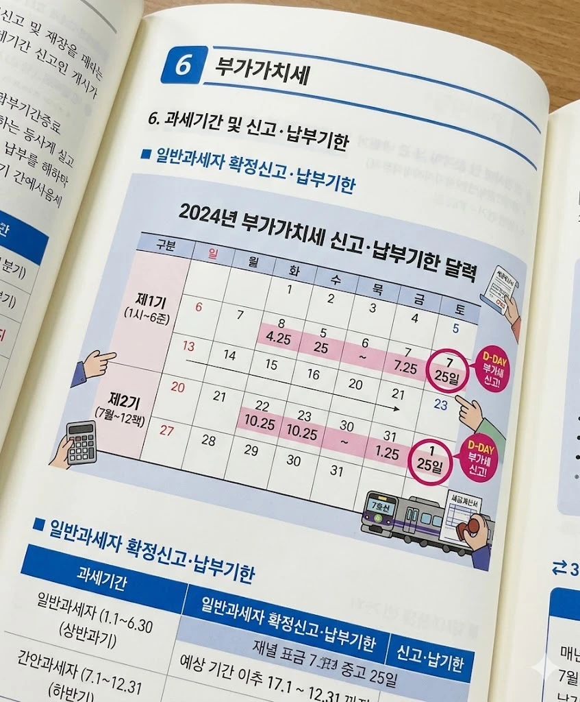
| 구분 | 과세기간 | 대상 기간 (예정/확정) | 신고·납부기한 |
|---|---|---|---|
| 제1기 (상반기) |
1.1 ~ 6.30 | 예정신고기간: 1.1 ~ 3.31 (1분기) | 4.25 까지 |
| 과세기간 최종 3월: 4.1 ~ 6.30 (2분기) | 7.25 까지 | ||
| 제2기 (하반기) |
7.1 ~ 12.31 | 예정신고기간: 7.1 ~ 9.30 (3분기) | 10.25 까지 |
| 과세기간 최종 3월: 10.1 ~ 12.31 (4분기) | 익년 1.25 까지 | ||
| 간이과세자 | 1.1 ~ 12.31 (1년 전체) | 익년 1.25 까지 | |
2) 이외의 특수한 과세기간
- 신규사업자 (최초 과세): 사업개시일 ~ 개시일이 속하는 과세기간 종료일
(※ 제조업의 개시일은 '재화 제조 개시일'임) - 등록 전 공급: 등록신청일 ~ 과세기간 종료일
- 폐업자: 당해 과세기간 개시일 ~ 폐업일 (※ 신고기한: 폐업일이 속하는 달의 다음달 25일)
-
간이과세 포기의 경우:
- 포기 신고일 속하는 달의 전달 마지막 날까지 포기신고서 제출.
- 개시일 ~ 포기 신고일 속하는 달의 마지막 날: 간이과세자 과세기간
- 포기 신고일 속하는 달의 다음달 1일 ~ 과세기간 종료일: 일반과세자 과세기간
3) 공급대가 변동에 따른 과세유형 전환 시기
| 과세유형의 전환 | 규정이 적용되는 과세기간 |
|---|---|
| 일반과세자 ➔ 간이과세자로 변경 | 그 변경 이후 7.1 ~ 12.31 까지 |
| 간이과세자 ➔ 일반과세자로 변경 | 그 변경 이전 1.1 ~ 6.30 까지 |
매년 1월 25일과 7월 25일이 다가오면 효빈교통공사 7호선 회계부서는 지옥으로 변한다. 사업자는 과세기간 종료 후 25일 이내에 확정신고와 납부를 해야 하기 때문. (물론 4월 25일, 10월 25일의 예정신고도 있다.)
7호선 임세정과 임세하 자매는 예정신고 때 누락된 전동차 부품 매입세액 내역과 최종 3개월분의 과세표준을 맞추느라 밤샘 엑셀(...)과 코딩을 병행하며 눈에 핏대를 세운다. 세하가 "이중루프 돌려서 검증 다 끝났어!"라고 소리치면, 세정이 엔터를 치며 국세청 홈택스 전송 버튼을 누르는 것이 이들의 분기별 행사다.
7. 납세지 (사업장별 과세원칙)
납세지란 납세의무자가 납세의무를 이행하고 세무관청이 과세권을 행사하는 기준이 되는 장소를 말한다. 부가가치세는 원칙적으로 각 사업장마다 신고·납부하고 사업자등록을 해야 한다. (각 사업장이 납세지가 됨)
7.1. 사업장의 개념 및 유형별 분류
사업장의 개념: 사업자가 사업을 하기 위하여 거래의 전부 또는 일부를 하는 고정된 장소. 여기서 거래란 과세대상 재화/용역을 공급하는 것을 의미하므로, 단순히 업무 연락만을 하는 장소, 원재료 또는 중간제품의 생산만을 위한 장소, 재고자산의 보관만을 위한 장소는 사업장에 해당하지 않는다.
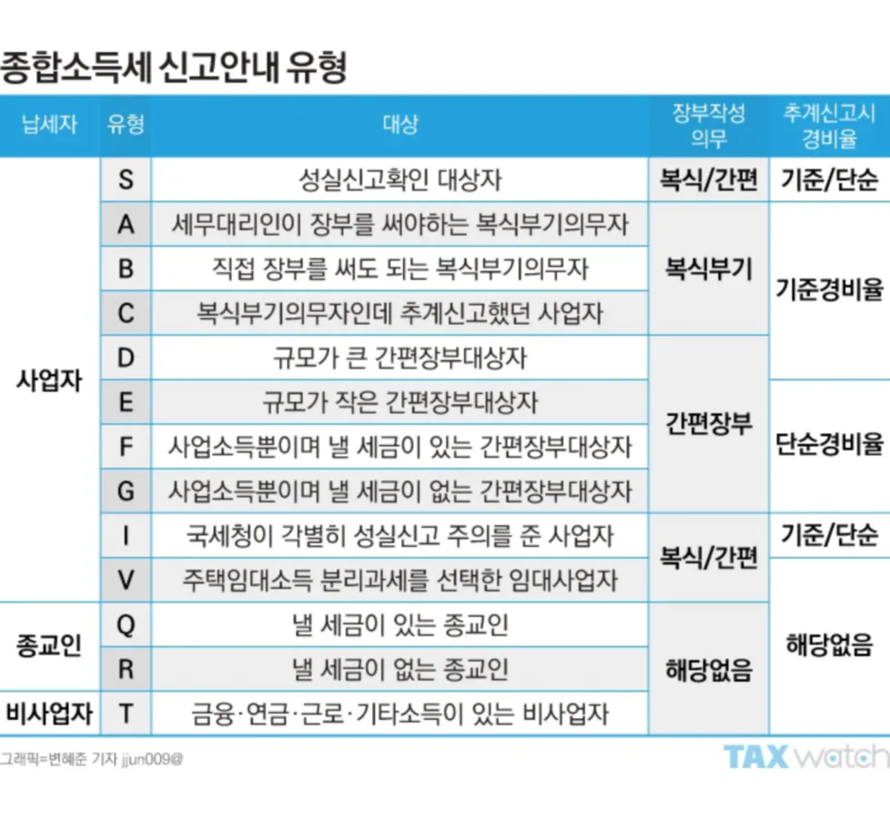
| 구분 | 사업장 (납세지) 기준 |
|---|---|
| 광업 | 광업사무소 소재지 |
| 제조업 | 최종 제품을 완성하는 장소 (단, 제품의 포장만을 하거나 용기에 충전만을 하는 장소는 사업장에서 제외) |
| 건설업, 운수업, 부동산매매업 |
• 법인: 그 법인의 등기부상 소재지 (지점소재지 포함) • 개인: 업무총괄장소 ※ 이유: 건설 현장마다 사업장으로 하면 현장마다 세금 신고해야 하는 실무상 지옥이 열리기 때문. [비교: 건설하는 장소 X] |
| 부동산 임대업 | 그 부동산의 등기부상 소재지 ※ 이유: 각각의 부동산 등기부상 소재지에서 계속·반복적으로 부가가치가 창출되기 때문. |
| 무인자동판매기 사업 | 그 사업에 관한 업무총괄장소 [킬러 함정: 자판기 설치장소 절대 아님!!!] |
| 비거주자, 외국법인 | 비거주자 또는 외국법인의 국내사업장 |
| 기타 | 사업장 외의 장소도 신청에 의하여 추가로 사업장 등록 가능. (단, 무인자동판매기 설치장소는 추가 등록 절대 불가) |

7.2. 직매장, 하치장, 임시사업장 (빈출 주의)
사업장을 확장하거나 물건을 보관할 때, 그 장소가 세법상 '사업장'으로 인정되는지 여부는 매우 중요하다.
| 구분 | 상세 내용 (교재 완벽 분석) | 사업장 여부 |
|---|---|---|
| 직매장 |
사업자가 자기 사업과 관련하여 생산/취득한 재화를 직접 판매하기 위하여 특별히 판매시설을 갖춘 장소. 판매행위가 이루어지므로 당연히 별개의 사업장에 해당한다. 공급의제 주의: 2 이상의 사업장이 있는 사업자가 판매 목적으로 다른 사업장(직매장)에 반출하는 것은 '재화의 공급'으로 간주(과세)한다. (단, 총괄납부나 사업자단위과세 적용 시 제외) |
O |
| 하치장 |
재화를 단순히 보관·관리만 하는 장소. 판매행위가 없으므로 사업장이 아니다. • 신고: 하치장 설치일로부터 10일 이내에 관할 세무서장에게 설치신고서를 제출해야 함. |
X |
| 임시사업장 |
박람회, 각종 경기대회 등 임시로 행사장에 개설한 사업장. 기존 사업장에 포함되는 것으로 본다. (별도 사업장 아님) • 신고: 개시일로부터 10일 이내에 개설신고 (단, 설치기간이 10일 이내면 신고 불필요). 폐쇄 시에도 10일 이내 폐쇄신고. |
기존 사업장에 포함 (X) |

2호선 아오바 모카가 중수역 본점에서 빵을 제조하고 있다. 사업이 너무 잘되어 효빈대역 앞에 빵만 파는 가게(판매시설)를 냈다면 이는 직매장(사업장 O)이다. 밀가루가 너무 많아 월천역 근처에 창고만 빌려 밀가루를 보관한다면 이는 하치장(사업장 X)이다.
어느 날 토모리해수욕장에서 열린 여름 록 페스티벌에 5일짜리 빵 팝업부스를 열었다면? 이는 임시사업장이며 기존 본점에 포함되고, 10일 이내이므로 세무서 신고조차 필요 없다!
★ 7.3. 주사업장 총괄납부 vs 사업자 단위 과세제도 (최중요 킬러 파트)
사업장이 여러 개인 경우, 세금을 각 사업장마다 내면 자금 압박과 실무적 불편함이 크다. 이를 해결하기 위한 두 가지 제도를 반드시 완벽하게 비교 암기해야 한다.
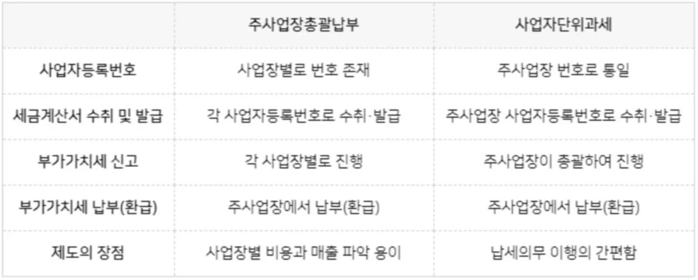
| 구분 | 주사업장 총괄납부제도 (자금 부담 완화 목적) |
사업자 단위 과세제도 (납세자 편의 제고 목적 / ERP 도입) |
|---|---|---|
| 핵심 개념 | 둘 이상의 사업장이 있을 때, 각 사업장에서 계산한 납부/환급세액을 통산하여 주된 사업장에서 한 번에 납부/환급만 총괄하는 제도. | 사업장이 아닌 '사업자 단위'로 모든 납세의무(등록, 세금계산서, 신고, 납부 등)를 한 번에 이행하는 완벽한 퉁치기 제도. |
| 효력 범위 (가장 중요) |
오직 "납부(환급)만 총괄" ※ 주의: 과세표준 퉁치는 거 아님! 세금계산서 발급, 신고, 사업자등록은 모두 각 사업장별로 따로따로 이행해야 함. |
모든 의무 총괄 ※ 사업자등록증 1개로 단일화, 세금계산서 1개로 발급, 신고도 납부도 본점에서 다 합쳐서 함. |
| 주사업장/본점 기준 |
• 법인: 본점 또는 지점 선택 가능 • 개인: 주사무소 (분사무소 불가) |
• 법인: 오직 본점만 가능 (지점 불가) • 개인: 주사무소 (분사무소 불가) |
| 신청 기한 |
계속 사업자: 과세기간 개시 20일 전까지 변경 신청 (승인 불필요) 신규/추가 사업자: 사업개시일(사업자등록증 받은 날)부터 20일 이내 |
|
| 공급의제 배제 | 판매목적 타사업장 반출 재화의 '공급의제'가 배제됨 (과세 안함, 세금계산서 안 끊음) | |
교과서의 지루한 (주)삼일 예제를 임세정(주사업장 본점)과 임세하(종사업장 직매장) 자매의 마개조 공장으로 완벽하게 치환하여 계산 구조를 팩폭해본다.

제조업을 영위하는 (주)효빈공학 자매. 주사업장(세정)과 종사업장(세하)의 납부 시 납부세액과, 총괄납부 신청 시의 납부세액을 계산하시오.
| 구분 | 주사업장 (언니 세정 본점) | 종사업장 (동생 세하 직매장) | ||
|---|---|---|---|---|
| 내역 | 공급가액 | 세액 | 공급가액 | 세액 |
| 매출 | 900,000 | 90,000 | 250,000 | 25,000 |
| 직매장반출* | 350,000 | 35,000 | - | |
| 매출 소계 | 1,250,000 | 125,000 | 250,000 | 25,000 |
| 매입 | 700,000 | 70,000 | 400,000 | 40,000 |
| 제조장반입* | - | 350,000 | 35,000 | |
| 매입 소계 | 700,000 | 70,000 | 750,000 | 75,000 |
* 주사업장 총괄납부제도에서는 직매장 반출을 '재화의 공급'으로 보지 아니하므로, 매출세액(주사업장)과 매입세액(종사업장) 계산 시 아예 제외해야 함!!
■ (1) 개별납부 시 세액
- 주사업장(언니 세정) 납부세액: 125,000(소계) - 70,000(소계) = 55,000원 납부
- 종사업장(동생 세하) 환급세액: 25,000(소계) - 75,000(소계) = △50,000원 환급
■ (2) 총괄납부 신청 시 세액 (퉁치기 마법)
- 주사업장 찐 매출/매입: 90,000(반출제외) - 70,000 = 20,000원 납부
- 종사업장 찐 매출/매입: 25,000 - 40,000(반입제외) = △15,000원 환급
- 총괄납부세액 (본점에서 한방에): 20,000 + (△15,000) = 최종 5,000원만 납부!
시장님 코멘트: 개별로 하면 언니는 55,000원 뜯기고 동생은 환급받을 때까지 자금이 묶여버립니다. 총괄납부 신청하면 5,000원만 달랑 내고 끝나니 회사 자금 흐름이 확 트이는 겁니다. 이래서 제도를 아는 놈이 돈을 번다는 겁니다.